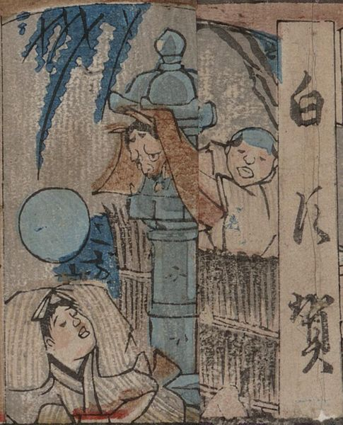

← 图鉴索引

般若の面を灯籠に付け、妖怪のふりをして人を驚かす男。
著作者：梅堂國政／出典：親書誌：U426_nichibunken_0434：どおけ東海道五十三次雙六／日付：2017／資源識別子：U426_nichibunken_0434_0001_0000
Copyright (c)2010- International Research Center for Japanese Studies, Kyoto, Japan. All rights reserved.